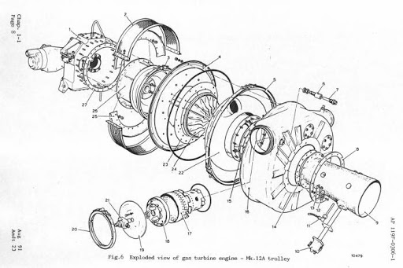

Ik gebruik deze pagina voor het inleveren van de eerste opdracht van Smart Connection. In onderstaande tekst vindt u een aantal onderdelen die in de opdracht opgenomen moesten worden. Denk hierbij aan bullets, een foto en een video. Ik heb de opmaak gemaakt met behulp van inline CSS.
Ik heb voor ik deze begon minor nog nooit gebruik gemaakt van html of css code. Na een korte introductie tot dit onderwerp in de les heb ik me verdiept op een aantal manieren:
Van oorsprong ben ik werktuigbouwkundige. Ik ben geïnteresseerd in hoe dingen werken en hoe ze verbeterd kunnen worden. Omdat gasturbines een onderdeel zijn van de werktuigbouwkunde heb ik onderstaande afbeelding toegevoegd, kijk onderstaande video of klik op de afbeelding voor meer informatie over gasturbines
